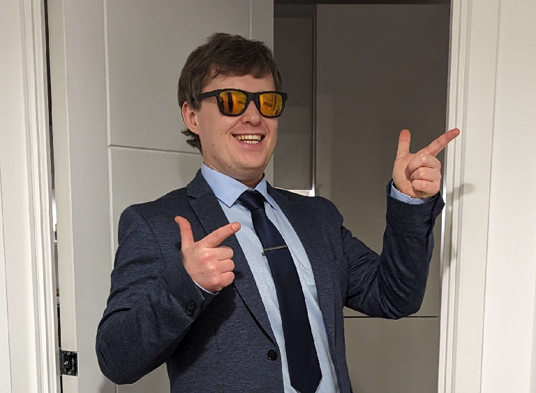

Matthew Meade

Located in Bexhill-on-Sea, East Sussex
Contact Me
Personal Summary
I am an IT professional and a passionate software developer with an analytical and creative
approach to problem solving. I currently specialise with .NET and C# but with my excellent
understanding of foundational programming concepts I am driven to quickly learn, adapt, and
improve my skills in other areas as well. Alongside my technical ability, I have various desirable
professional skills and experience including managing and working with teams of people in various
collaborative projects both in- and outside of a professional environment.
With a deep love for computers, I am fascinated by the boundless potential of technology. My
technical skills are built upon this passion, and I am driven to further explore the potentials of
software development. Having worked on a range of professional and personal projects, I have
gained experience in:
- Using object-oriented programming languages (such as C#, PHP and Visual Basic).
- Developing and supporting .NET Windows applications in a professional environment.
- Implementing web APIs from various providers (both REST and SOAP).
- Developing and supporting websites, web applications and databases including using various web languages (such as HTML, CSS, SQL, and PHP).
With my professional and technical skills, passion, and willingness to learn more in this area, I
believe that I can be a valuable asset to any team.
Key Skills & Qualities
- Analytical approach to problem solving.
- Attention to detail.
- Quick to learn and adapt.
- Keen to do well with a good initiative.
- Good understanding of workplace values.
- Good teamwork & communication.
- Flexible and accommodating to ever-changing needs and situations.
- Professional attitude.
- Good organisation and time management.
- Polite, honest, and trustworthy.
- Experience managing a team.
Technical Skills
- High degree of knowledge and experience with C# and .NET (Framework, Core and 5.0+).
- Excellent understanding of the OOP model and principles such as SOLID and DRY.
- Experience creating .NET WinForms and WPF applications.
- Understanding of ASP.NET including the MVC Pattern and Blazor.
- Web APIs including SOAP and REST with OAuth and OData 2.0.
- Experience with other languages including PHP, Visual Basic, VBA, HTML, CSS, and SQL.
- Experience with IDEs such as Visual Studio as well as a range of other development software.
Work History & Experience
2015-2023: Socks-U-Wear Ltd. (8 years)
As the IT manager of an e-commerce company, I was responsible for the management of IT systems,
facilities, and projects. I was also solely responsible for developing and supporting bespoke
software for the company. Read more...
Education & Qualifications
East Sussex College
- Apprenticeship in IT, Software, Web & Telecoms Professionals - Advanced and Intermediate Levels
- BTEC Certificate in ICT Systems and Principles - Level 3 and Level 2
Robertsbridge Community College
- OCR National Certificate in ICT Level 2 - Distinction Grade
- AQA ICT Functional Skills Level 2 - Pass Grade
- Edexcel Mathematics - GCSE Grade B
- OCR English Language - GCSE Grade C
- AQA D&T Graphic Products - GCSE Grade B